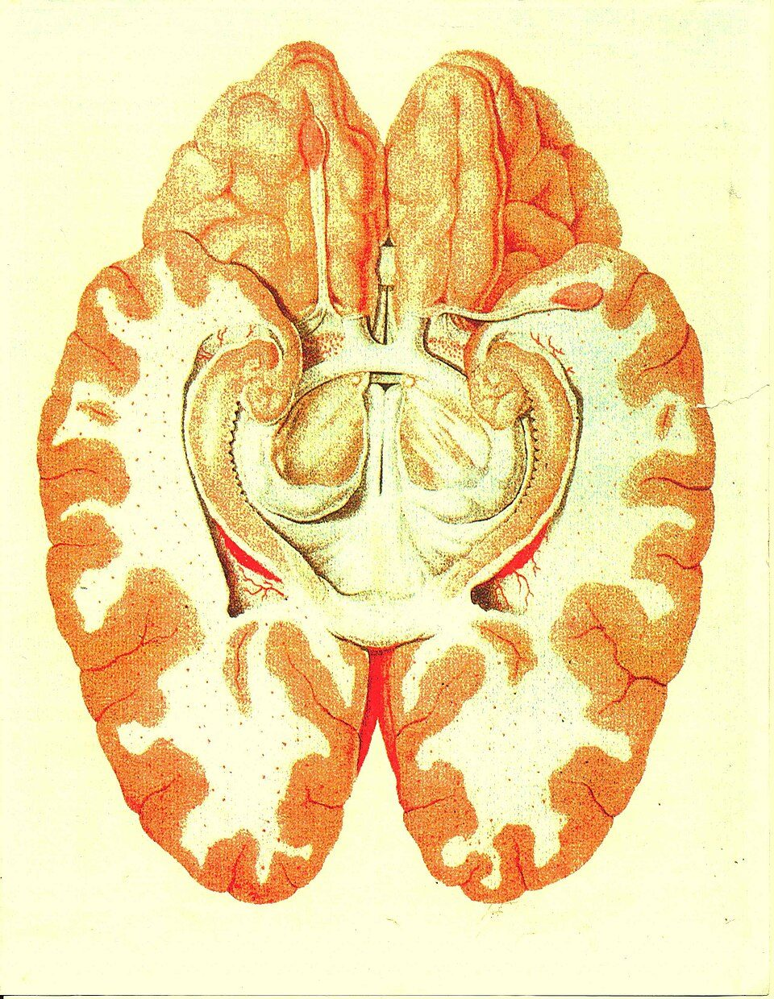

Qué son las emociones
Las emociones son respuestas del organismo ante situaciones importantes para nuestra supervivencia o bienestar. Combinan una reacción del cuerpo (el corazón se acelera, se suda, cambia la expresión de la cara), una experiencia subjetiva (el sentimiento de miedo o alegría) y una tendencia a actuar (huir, acercarse, atacar). Charles Darwin ya observó en 1872 que las expresiones de las emociones básicas son parecidas en todas las culturas y en otros animales.
Lejos de ser lo contrario de la razón, las emociones son imprescindibles para decidir bien.
El cerebro emocional
No hay un único «centro de las emociones», sino una red:
| Estructura | Papel |
|---|---|
| Amígdala | Detecta amenazas y lo relevante; miedo; da carga emocional a los recuerdos |
| Hipotálamo | Pone en marcha la respuesta del cuerpo (hormonas, sistema autónomo) |
| Ínsula | Percibe el estado interno del cuerpo; asco, empatía |
| Cíngulo anterior | Conflicto, dolor emocional, motivación |
| Corteza prefrontal (orbitofrontal y ventromedial) | Regula y da sentido a las emociones; decide |
| Núcleo accumbens y dopamina | Recompensa, placer, deseo |
| Hipocampo | El contexto de las emociones |
Ver hipocampo y sistema límbico.
Dos caminos para el miedo
Joseph LeDoux describió que la información de un peligro llega a la amígdala por dos vías: una rápida y tosca, directamente desde el tálamo, que nos hace saltar ante algo que parece una serpiente antes de saber qué es; y una lenta y precisa, que pasa por la corteza y nos dice que era un palo. Es mejor equivocarse por exceso de prudencia.
Emoción y razón: Phineas Gage
En 1848, una barra de hierro atravesó el lóbulo frontal de Phineas Gage, un capataz de ferrocarril estadounidense. Sobrevivió, pero su carácter cambió: se volvió impulsivo, irreverente e incapaz de planificar. Más de un siglo después, Antonio Damasio estudió a pacientes con lesiones parecidas: razonaban bien en teoría, pero tomaban decisiones desastrosas en la vida real. Propuso la hipótesis del marcador somático: las emociones, a través de señales del cuerpo, marcan las opciones como buenas o malas y nos ayudan a decidir. Sin ellas, decidimos peor.
Las neuronas espejo


En los años noventa, Giacomo Rizzolatti y su equipo en Parma descubrieron en monos unas neuronas que se activaban tanto al realizar una acción como al ver a otro realizarla: las neuronas espejo. Se propuso que participan en la imitación y en comprender las acciones e intenciones de los demás. Su papel en la empatía humana existe, pero es más limitado de lo que se popularizó en su momento.
Regular las emociones
La corteza prefrontal puede modular la respuesta de la amígdala. Estrategias como reinterpretar una situación, ponerle nombre a lo que se siente, la respiración lenta, el ejercicio y el sueño ayudan a regular las emociones. Ver estrés y cerebro.
Cuando las emociones cambian por una enfermedad
- Demencia frontotemporal: pérdida de empatía, desinhibición, apatía. A menudo es el primer síntoma.
- Ictus: hasta un tercio de los pacientes tiene depresión después; también la labilidad emocional (llanto o risa que no se pueden controlar).
- Párkinson: depresión, ansiedad y apatía son frecuentes, a veces antes que los síntomas motores.
- Esclerosis múltiple, traumatismos craneales, epilepsia del lóbulo temporal (miedo como aura) y encefalitis autoinmunes.
Estos cambios forman parte de la enfermedad, no son «carácter», y muchos tienen tratamiento.
Fuentes
- Damasio AR. El error de Descartes. Crítica; 1996.
- LeDoux JE. Emotion circuits in the brain. Annu Rev Neurosci. 2000;23:155-84.
- Rizzolatti G, Craighero L. The mirror-neuron system. Annu Rev Neurosci. 2004;27:169-92.
- Hackett ML, Pickles K. Part I: frequency of depression after stroke: an updated systematic review and meta-analysis. Int J Stroke. 2014;9:1017-25.